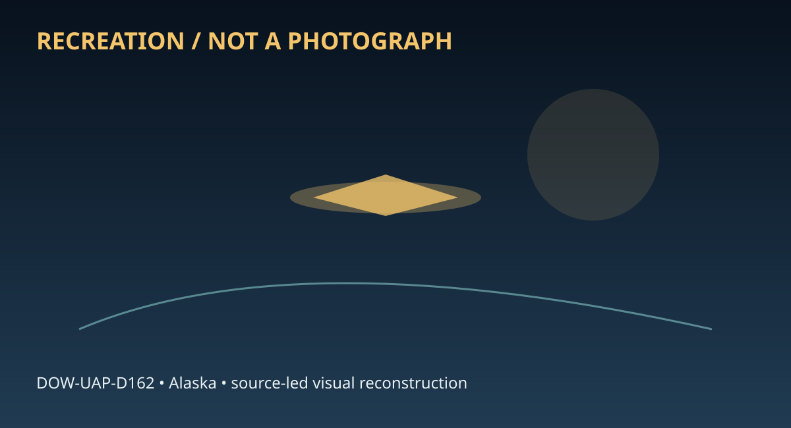

Release 07 / archival case file / DOW-UAP-D162
D162 Air Intelligence Information Report Alaska 1953
This d162 air intelligence information report places a report, light thread in a 1953 Alaska record.
ID: DOW-UAP-D162
Filename:
DOW-UAP-D162-Air_Intelligence_Information_Report_Alaska-1953.pdfDate marker: 1953
Location: Alaska
Agency or collection signal: Air Force
Pages read: 4

RECREATION / NOT A PHOTOGRAPH. The diagram is an interpretive editorial aid, not source imagery.
What this document says
The opening page's extracted text begins: “.,. At ros;~t,., (i} ., AF FORM 112 ~~~ (a.ASSIFIION) APPROVED 1JUNE 1940 .. COUNTRY REPORT NO. ALASKA IR 5004-42-53 ~ s AIR INTELLIGENCE INfORMATION REPORT SUBJECT Light Observed West of Gambell AREA REPORTED ON Gambell, St. Lawrence Island, Alaska DAT£ OF REPORT I DATE OF INFORMATION 8 Dec 1953 1 Dec 1953 rROM CArimcv, 5004th Air Intelligence IAPO 2 co PM Seattle Wash . EVALUATION I C-3 Sv Sq PREPARED BY (O_aiur) I SOURCE JOHN V. WRIGHT Capt USAF Clifford Iknokinok REFERENCES (OnUrol number ;Jirmloe, pri.foiu rtport, ac., a, appllcabk) SU MM ARY: (11}nter amcile aummarv of report. Gioe lignijicanu in fmal onHtnlenct paragraph. Lill ii1cloaum at lwer ltft. Btgln tut ofreport on A.F Form 111-Part lI.) This report contains information on a light seen by an observer at Gambell, St. Lawrence Island, Alaska (63°501N- 171°361W) , OllllOZ December 1953. Light was observed on a true heading of 283° from Gambell. While no definite conclusion can be reached as to the or1g1n of the light, a possibility exists that it could have come from an unidentified ship operating in or near U. s. Territorial Waters . APPROVED: Authority: NND57597 !1(7~ ~A •••R~d. 1 WILLIAM H: G~1 Major, USAF Commander \h I 1 J.,IBRARY SUBJECT & AREA CODES - - - ~M~showing Obse'rvation ;1/otle y:, 2 DISTRIB 10 11 BY ORIGINATOR COM'.ALSF.AFRON, ATTN: D /NI Comdr, 10th Air Div, ATTN: D/1 Comdr, AAC, ATTN: OI Comdr, FF.”
Across the 4 pages, the recurring terms are report, light. Those details belong to this file, not to a generic case template. Page-level reading follows:
- Page 1: .,. At ros;~t,., (i} ., AF FORM 112 ~~~ (a.ASSIFIION) APPROVED 1JUNE 1940 .. COUNTRY REPORT NO. ALASKA IR 5004-42-53 ~ s AIR INTELLIGENCE INfORMATION REPORT SUBJECT Light Observed West of Gambell AREA REPORTED ON Gambell, St. Lawrence Island, Alaska DAT£ OF REPORT I DATE OF INFORMATION 8 Dec 1953 1 Dec 1953 rROM CArimcv, 5004th Air Intelligence IAPO 2 co PM
- Page 2: GJ AF FORM 112-PART II v4',C a..4' tfi>J (CLASSIFICATl7 APPROVED 1 JUNE 1948 ~ _.,, AIR INTELLIGENCE INFORMATION REPORT FROM (~me,) REPORT NO. 5004th Air Intel Sv Sq APO 942, c/o Pl , Seattle, Wash IR 5004-42- 53 2 3 PAGE OF PAGES I . This report contains information on a l ight seen by an observer at Gambel l , St. Lawrence Isl~nd, Alaska (63°50'N - 171°36'
- Page 3: ' v/b~~ AF FOl!M 11.2--::f>ART II (CLASSIFlCAT) APPROVED I JUNE 1948 AIR INTELLIGENCE INFORMATION REPORT .. V. COMMENTS OF PREPARING OFFICER : WII.J.,I.AM W. CALDWELL, ioomber of Flight A, 5004th AISS, at Gambell 11 used a Len satic Compass to determine the true bearing of the light observed. He al so made a check of the village to see if other natives ha
- Page 4: I r AF FORM 112-PART II Um.de 44~.L {a.ASSIFI N) APPROVE?l I JUNE lt'-48 .. AIR INTELLIGENCE INFORMATION REPORT FROM (Aqme,) REPORT NO. 5004th Air Intel Sv Sq APO 942, c/o PM, Seattle, Wash IR 5004-42-53 / / SCALE: 1"•13.7 NM CAPE CHAPLINA INCL #1 PAGE OF PAGES N / / ST. LAWRENCE ISLAND NOTE: THIS DOCUMENT CONTAINS INFORMATION AFFECTING THE NATIONAL DEFENSE
Historical context and disclosure schema
Read in context, this record belongs to the 1953 information environment: Air Force paperwork, a Alaska setting, and the reporting conventions visible in the source. Its broader disclosure value is procedural as well as anecdotal: it shows how an observation, material question, investigation, or analytical program was routed, described, and preserved. That makes it comparable to other Release 07 records without collapsing unlike evidence into one event.
Evidence limits
The source establishes that this document exists and records what its authors or quoted witnesses wrote. It does not, by itself, prove the identity, performance, origin, or physical reality of the reported subject. Extraction preserves wording but cannot restore missing attachments, authenticate provenance, or independently validate testimony. Interpretations beyond the page-specific record remain hypotheses.
Source: supplied PDF in research/tranche-07. This article is a research aid, not a claim that the reported object was non-human.